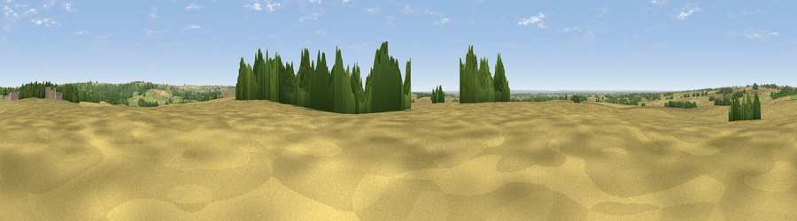

Beacon Hill
#24114 in England · top 33% of its area beats it · near GoulcebyThe view, rendered

A 360° render of this exact spot computed from the terrain model, tree cover and land cover — summer colours, afternoon light, calibrated against photographs of famous viewpoints. Real trees, hedges and buildings will differ in detail.
The panorama
Grey silhouette: terrain skyline in each direction (720 bearings, Earth curvature and refraction included). Dashed green: skyline with trees (+15 m) and buildings (+8 m) as obstacles. Blue strip: how far the ground is visible on each bearing.
Where the view opens
Wedge length = distance to the farthest visible ground on that bearing (vegetation-aware). Rings at 10, 25 and 50 km.
What fills the view
71% cropland · 17% grassland · 11% woodland ·
Angular shares of the visible panorama (visual magnitude), not map area. Landscape diversity 0.36 (0–1 Shannon).
Key numbers
More beautiful places nearby
The staircase of upgrades: each row has a higher view potential than everything closer. Driving times are estimates from straight-line distance, calibrated against real road routing — check an actual route before setting out.
| Place | Direction | Drive | Score |
|---|---|---|---|
| Viewpoint near Donington on Bain | NE · 4 km | ~8 min | 50.5 |
| Viewpoint near Goulceby | ENE · 4 km | ~9 min | 56.9 |
| Viewpoint near Fulletby | SE · 9 km | ~18 min | 57.9 |
| Viewpoint near Tetford | ESE · 12 km | ~22 min | 58.0 |
| Warden Hill | ESE · 13 km | ~24 min | 59.5 |
| Viewpoint near Claxby | NNW · 18 km | ~31 min | 61.7 |
| Viewpoint near Claxby | NNW · 18 km | ~31 min | 64.9 |
| Viewpoint near Claxby | NNW · 20 km | ~33 min | 71.5 |
53.29589, -0.16317 · source: osm peak · position refined by local search. Computed location — check access rights before visiting.